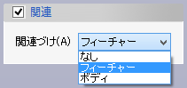
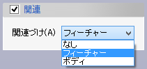

交線(カーブ）
交線(カーブ）
面と面の交線を作成します。

操作方法
交線を計算する面(フェイス、ボディ(シート、ソリッド))(複数可)を選択して,OKボタンで実行します。
ボディを選択した場合は構成面全てで実行します。
パラメータ
- サーフェイス1、サーフェイス2
サーフェイス1の面とサーフェイス2の面とで交線を計算します。
- 関連（オプション）
 
選択したサーフェイスと作成された交線との関連づけの方法を指定します。既定値は「フィーチャー」です。